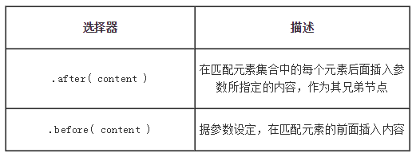

也就是兄弟之间的关系处理，这里jQuery引入了2个方法，可以用来在匹配I的元素前后插入内容

after向元素的后边添加html代码，如果元素后面有元素了，那将后面的元素后移，然后将html代码插入
before向元素的前边添加html代码，如果元素前面有元素了，那将前面的元素前移，然后将html代码插
测试before
测试after
与内部插入处理一样，jQuery由于内容目标的位置不同，然增加了2个新的方法insertAfter与insertBefore
.before()和.insertBefore()实现同样的功能。主要的区别是语法——内容和目标的位置。
对于before()选择表达式在函数前面，内容作为参数，而.insertBefore()刚好相反，内容在方法前面，它将被放在参数里元素的前面
.after()和.insertAfter() 实现同样的功能。主要的不同是语法——特别是（插入）内容和目标的位置。
对于after()选择表达式在函数的前面，参数是将要插入的内容。对于 .insertAfter(), 刚好相反，内容在方法前面，它将被放在参数里元素的后面
before、after与insertBefore。insertAfter的除了目标与位置的不同外，后面的不支持多参数处理
insertAfter将JQuery封装好的元素插入到指定元素的后面，如果元素后面有元素了，那将后面的元素后移，然后将JQuery对象插入；
insertBefore将JQuery封装好的元素插入到指定元素的前面，如果元素前面有元素了，那将前面的元素前移，然后将JQuery对象插入；
测试insertBefore,不支持多参数
测试insertAfter,不支持多参数